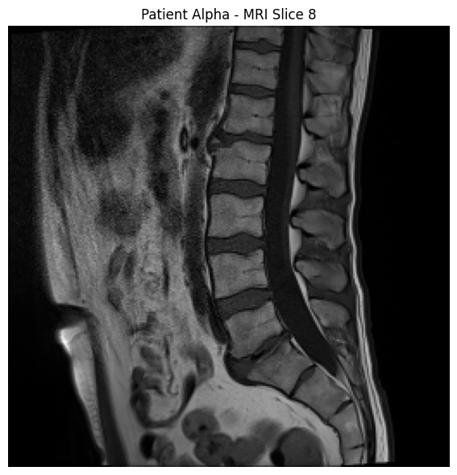

Patient Alpha · sagittal MRI slice 8
Phase 1 Prototype
Early-phase browser viewer for lumbar spine MRI. This static demo uses curated slice exports. The full Streamlit app loads DICOM volumes locally.

Patient Alpha · sagittal MRI slice 8